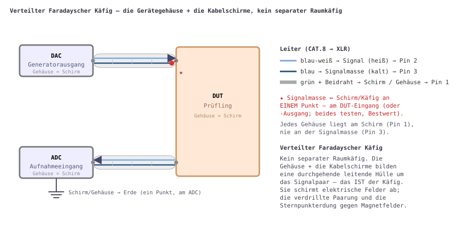

THD im Sub-ppm-Bereich und Rauschgrenzen von −150 dBV sind nur dann etwas wert, wenn die Verkabelung zwischen den Teilen des Messplatzes weniger Rauschen einbringt, als der Prüfling erzeugt. Diese Seite zeigt, wie Generator (DAC), Prüfling (DUT) und Aufnahme (ADC) verbunden werden, damit äußere elektromagnetische Felder möglichst wenig Spannung auf den Signal- und Signalmasse-Leitungen induzieren. Es gibt keinen separaten Raumkäfig: Die Gerätegehäuse und die Kabelschirme bilden zusammen eine durchgehende leitende Hülle um das Signalpaar — einen verteilten Faradayschen Käfig, über XLR-Pin 1 verbunden und an einem Punkt geerdet.

Verwenden Sie ein Computer-Twisted-Pair-CAT.8-Patchkabel mit XLR-Steckern. CAT.8 hat einen doppelten Schirm: eine Aluminium/PET-Folie um jedes Paar plus einen Gesamtschirm um alle vier. Eine Folie ist ein durchgehender, lochfreier Schirm — anders als der Geflechtschirm von Koax, ein Netz voller kleiner Öffnungen, durch die Felder lecken. Die Verdrillung ist die zweite Waffe: Sie verkleinert die Schleifenfläche zwischen Signal und Rückleiter, sodass ein Magnetfeld in aufeinanderfolgenden Verdrillungen gleich große, entgegen gesetzte Spannungen induziert, die sich aufheben.[1]
Die Verbindung ist unsymmetrisch, geführt über ein verdrilltes Paar, wobei die Folie als separater Gehäuseschirm dient:
| CAT.8-Ader | XLR-Pin | Funktion |
|---|---|---|
| blau-weiß | 2 (heiß) | Signal |
| blau | 3 (kalt) | Signalmasse (unsymmetrischer Rückleiter) |
| grün + grün-weiß + Beidraht | 1 | Schirm → Gerätegehäuse |
So sind Signal (Pin 2) und Signalmasse (Pin 3) das blau/blau-weiße verdrillte Paar; das grüne Paar und der Beidraht gehen alle auf Pin 1 als Schirm/Gehäuseschirm.
Signalmasse (Pin 3) wird an genau einer Stelle mit dem Schirm (Pin 1) verbunden — normalerweise am DUT-Eingang oder -Ausgang; beides testen und das leisere behalten. Überall sonst ist die Signalmasse-Leitung vom Schirm und vom Gehäuse isoliert.
Würde die Signalmasse zugleich als Schirm dienen (wie bei gewöhnlichem unsymmetrischem Koax), flösse jeder Strom, den ein äußeres Feld im Schirm induziert, durch den Signalrückleiter und addierte sich direkt am DUT-Eingang zum Signal. Gibt man dem Schirm einen eigenen Leiter (Pin 1, an jedem Gehäuse verbunden) und verbindet die Signalmasse nur an einem Punkt damit, erhalten diese Schirm-/Wirbelströme ihren eigenen Rückweg, außerhalb der Signalstrecke.
Das Gehäuse jedes Geräts liegt am Schirm (Pin 1), nie an der Signalmasse (Pin 3). Die Gehäuseschirme bilden einen durchgehenden Schirm auf Käfig-/Erdpotential; die Signalmasse schwimmt auf dem verdrillten Paar und berührt diesen Schirm nur am einzigen Sternpunkt am DUT.
Elektrische Felder — die übliche kapazitive Brummquelle — werden
durch die durchgehende Schirm-/Gehäusehülle vollständig ausgeschlossen (die
Folie um das Paar und die Metallgehäuse bilden einen geschlossenen Leiter).
Magnetfelder hält ein elektrostatischer Schirm nicht auf; man
überlistet sie durch Minimierung der Schleifenfläche. Die Hülle hilft ein
wenig (das äußere Wechselfeld treibt Wirbelströme in den
Schirm-/Gehäusewänden, die ein schwächeres Gegenfeld abstrahlen), doch die
Hauptverteidigung ist die winzige Schleifenfläche des verdrillten
Paars. Faradaysches Gesetz,
V = ω·B·Aeff:
| Größe | Schätzung (50 Hz) |
|---|---|
| Umgebungs-Netzfeld in einem normalen Raum (B)[2] | ~0,1 µT (0,05–1 µT) |
| Rest innerhalb des Käfigs | ~0,05 µT |
| Schleifenfläche des verdrillten Paars (pessimistisch) | ~10 mm² = 1×10⁻⁵ m² |
| Induzierte Spannung (EMK) | ≈ 0,16 nV ≈ −196 dBV |
Selbst ein bewusst pessimistischer Fall — keine Hüllen-Dämpfung und die 10-fache Schleifenfläche — ergibt ≈ 3 nV ≈ −170 dBV, immer noch mehrere zehn dB unter dem Eigenrauschen des Wandlers (≈ −150…−160 dBV pro Bin). Lässt man die Disziplin fallen — die Signalmasse zugleich als Schirm, sodass die ganze Schleife Kabel-zu-Gehäuse exponiert ist — induziert dasselbe Feld Mikrovolt (≈ −120 dBV): hörbares Brummen. Verdrillung plus Sternpunkterdung bringt rund 50–80 dB.
Dieselbe Verkabelung speist, was auch immer im Käfig sitzt — hier ein Twin-T-1 kHz-Sperrfilter und ein Anti-RIAA-Filter: